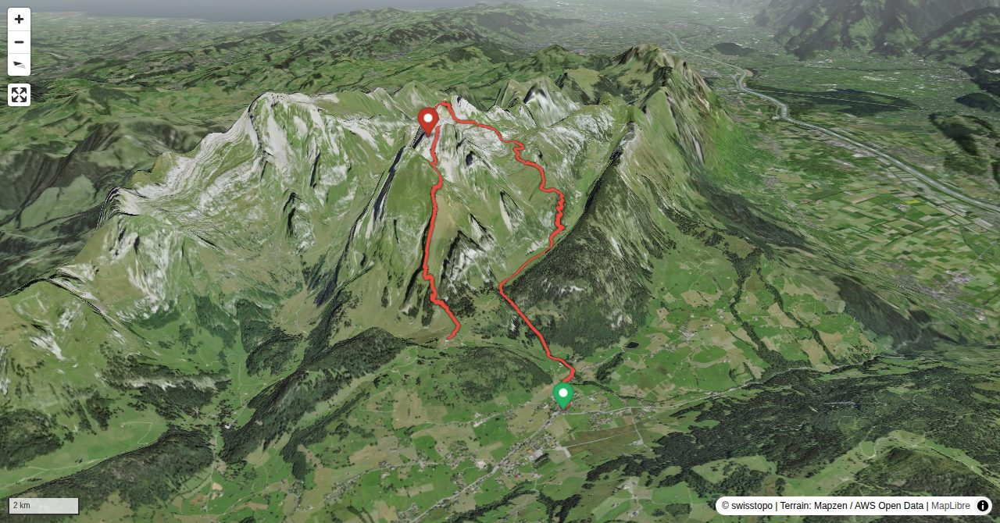

While the neighbouring Wildhuser Schofberg is very popular among hikers, hardly anybody knows Jöchliturm. Not even swisstopo, the Swiss map maker, knew its name and charted it simply as P. 2335. The summit is only a stone’s throw away from Nädliger with its limestone cliffs full of fossils, which is reachable on one of the most splendid hiking trails of the region. The round trip to Jöchliturm requires some stamina, as the Gamplüt aerial cable way saves only about 200 metres of vertical height. It is important to carry enough water because of the steep, sunny slopes. There are no restaurants on this side of the Alpstein range.
If you undertake the tour in the opposite direction, you have a number of variants to continue to the Alpstein range, e.g. climbing Altmann or crossing Rotsteinpass.
Quick Facts
| Summit elevation | 2336 m |
|---|---|
| Difficulty | SAC T4 Alpine hiking with exposure, rougher terrain, and sections that are not suitable for beginners. Guide |
| Trailhead | Wildhaus |
| Region | Eastern Switzerland |
| Canton | St. Gallen |
| Distance | 12.5 km (out-and-back) |
| Total ascent | ~1438 m |
| Elevation range | 1084-2335 m |
| Route sources | SAC Route Portal |
Photos


Planning
i
i
sac_scale (precise T1–T6) with
swissTLM3D Wanderwegart
fallback where OSM is silent (coarser T2/T3 and T4+ buckets).
Coverage: OSM 93.7% · swisstopo 5.5% · unknown 0.0%.Elevations computed from the inlined GPX track (SwissTopo height API).
Loading forecast…
Start: Wildhaus (1090 m)
End: Gamplüt, Bergstation (1349 m)
3D Terrain View

Route Details
Traverse Jöchliturm – Nädliger
- Wildhaus - Zwinglipasshütte: 2 ½ h Zwinglipasshütte - Nädliger - Jöchliturm: 2- 2: ½ h Jöchliturm - P. 2197 - Schöferhütte - Gamplüt: 2 h Add ½ hour if you do not ride the gondola down. If you undertake the tour in the opposite direction, you have a number of variants to continue to the Alpstein range, e.g. climbing Altmann or crossing Rotsteinpass.
Terrain & safety
The traverse Jöchli–Nädliger is well-marked (white-blue). There are exposed passages, some requiring the use of hands. There is a risk of rock fall on the steep slope below Jöchli.
Source: SAC Route Portal
Field Reference
| Trailhead | Wildhaus | 47.20340, 9.35080 |
|---|---|---|
| Summit | Wildhuser Schafberg (2336 m) | 47.23234, 9.35796 |
Coordinates are WGS84 decimal degrees (lat, lon). Emergency: 112 (general) or 1414 (Rega air rescue). Page URL: